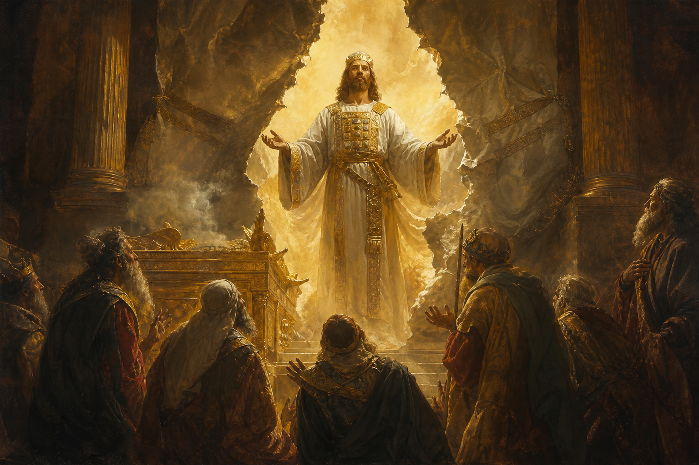

New Testament · Book 19 of 27
Hebrews
A sermon in letter form argues that Christ is better than every shadow that came before him, and urges weary believers to hold fast and press on.
Written to Jewish believers tempted to drift back to the old ways under pressure, Hebrews builds a sustained argument that Jesus is superior to angels, Moses, the priesthood, and every sacrifice that came before him.
Wherefore he is able also to save them to the uttermost that come unto God by him, seeing he ever liveth to make intercession for them.
What happens in Hebrews
The letter opens by declaring that God, who once spoke through the prophets, has now spoken fully through his Son, who is superior to the angels and to Moses alike. The author warns repeatedly against drifting away or hardening one's heart, using Israel's failure to enter the Promised Land as a sobering example, before introducing Jesus as a great high priest who sympathizes with human weakness and can be approached boldly in time of need. The letter's long central argument compares Jesus to the ancient priesthood of Melchizedek and the Levitical system, showing that his single sacrifice has accomplished once for all what countless animal sacrifices under the old covenant could never finish, because they could never actually take away sin. Chapter eleven catalogs a roll call of faith's heroes from Abel to the prophets, people who lived trusting promises they never saw fulfilled, holding them up as a great cloud of witnesses surrounding believers as they run their own race. The letter closes with practical exhortations to endure discipline as sons, to pursue peace and holiness, to keep the marriage bed undefiled, to remember those in prison, and to offer God a sacrifice of praise through Jesus continually.
Why it matters
Hebrews offers the New Testament's fullest explanation of how Christ's priesthood and sacrifice fulfill and surpass the entire Old Testament sacrificial system, giving believers confidence that nothing more is needed to approach God. Its roll call of faith and its warnings against giving up have steadied believers facing discouragement for two thousand years.